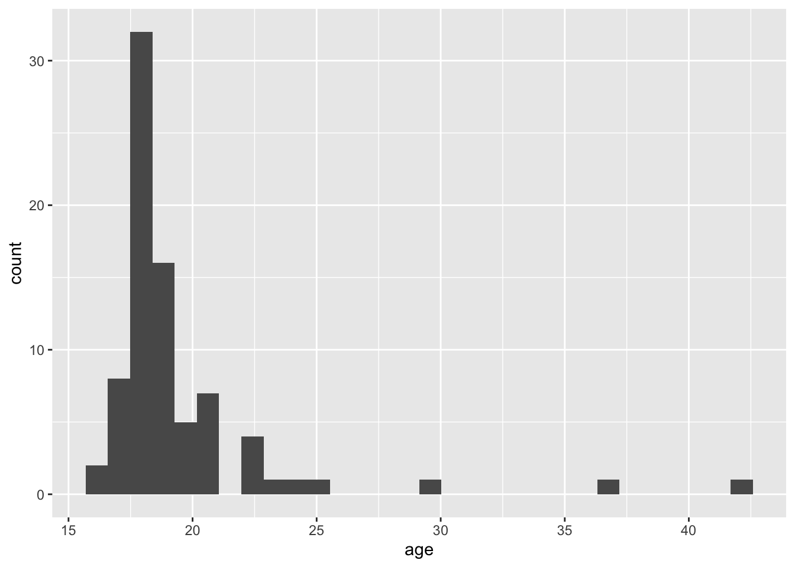

library(tidyverse)Lab 3: Hip-Hop
hiphop <- read_csv(here::here("supporting_artifacts",
"learning_targets",
"Lab3",
"hiphop.csv"))Question 1
Provide an overview of the data set:
The data set Hip Hop contains results from a research study at the University of Minnesota predicting musical taste from a persons’ familiarity with African American English (AAE). The data contains information about the 168 subject’s sex, age, ethnicity, geographic populations of their hometown/county, their preferences for different types of music, the ethnicity of the people they spend time with, and their familiarity with an African American English term. These subjects were selected from the undergraduate programs of linguistics, sociology, and music classes at the University of Minnesota, 166 of which were not African American. A coding scheme was created to transform each participant’s definition into familiarity (on a scale of 1-5 how well they know the word) and binary familiarity (do they know it at all).
Question 2
What are the rows of this data set?
There are 10752 rows which represent the 64 different AAE words and the 168 subjects that participated in the study. Each row represents a subject’s familiarity with one of the 64 words.
Question 3
How were missing values replaced? Benefits/Drawbacks?
Missing values were replaced with 0’s as well as the mean value of some variables. The other way that missing values are replaced is with “NA”.
A benefit to replacing the missing values with 0 are that we can still perform calculations on the specific variables without having to account for these missing variables. However, there are a few draw backs: the first is that if we were to perform calculations, it would weight a missing value as 0 which may skew the data in a certain direction. This could potentially change our prediction of music taste based on familiarity with AAE. The second drawback is that the missing values look similar to some of the other variables in which 0 actually has a value. For example, the different variables that count the number of artists subject’s like contain the number 0. This holds a true value of 0 rather than a missing value. This can be confusing for an outsider to look at the data set and discern between the two different zeros.
A benefit to replacing missing values with the mean is that you can still manipulate the data and the missing value just holds the average. A draw back is that the average may be no where near representative of the actual value. Using the mean value to calculate and manipulate the data could lead to inaccurate results.
One benefit to replacing missing values with NA is that it’s very clear and obvious where missing values occur. One draw back is that we are unable to perform calculations on those columns when there is an NA.
Question 4
Cleaning the data
# Removing missing values and converting character values to factors
clean <- hiphop |>
drop_na(numPreferredArtists,
numOverallArtists
) |>
mutate(across(where(is.character), as.factor)
)Question 5
How many unique AAE words were studied in this data set?
words <- distinct(clean,
word,
.keep_all = TRUE
)
count(words)# A tibble: 1 × 1
n
<int>
1 64There are 64 distinct words in the data set.
Question 6
Create a new variable
# Turning Ethnic variable into white and non-white
ethnic_clean <- clean |>
mutate(ethnic =
(if_else
(ethnic == "white",
"white",
"non-white"
)
)
)Question 7
Demographics of the people in the study:
# Creating a tibble with each distinct subject and selecting their sex, age, and ethnicity
indsubj <- ethnic_clean |>
distinct(subj,
.keep_all = TRUE)
demographics <- indsubj |>
select(sex,
age
)
# Finding summary statistics
summary(demographics) sex age
Female:56 Min. :16.00
Male :24 1st Qu.:18.00
Median :18.00
Mean :19.55
3rd Qu.:20.00
Max. :42.00 count(indsubj,
ethnic)# A tibble: 2 × 2
ethnic n
<chr> <int>
1 non-white 18
2 white 62There are 56 Females and 24 Males in the study after cleaning the data with an average age of 19.55. The majority of subjects are between the ages 16-20. 62 of the participants were white while 18 were in the non-white category.
Question 8
Create plots displaying demographic information
# Boxplot of Subject's ages by gender and separated by ethnicity
ggplot(data = indsubj,
mapping = aes(x = age,
y = sex,
color = ethnic)
) +
geom_boxplot() +
xlab("Age") +
ylab("Gender")
# Histogram of ages
ggplot(data = indsubj,
mapping = aes (x = age)
) +
geom_histogram()`stat_bin()` using `bins = 30`. Pick better value with `binwidth`.
Familiar Words
# Finding most and least familiar words for subjects under age 20
familiar_by_age <- ethnic_clean |>
filter(age < 20) |>
group_by(word) |>
summarize(MEAN_FAMILIARITY = mean(familiarity))
# Least Familiar Word
slice_min(familiar_by_age, MEAN_FAMILIARITY, n = 1)# A tibble: 1 × 2
word MEAN_FAMILIARITY
<fct> <dbl>
1 The Nation 1# Most Familiar Word
slice_max(familiar_by_age, MEAN_FAMILIARITY, n = 1)# A tibble: 1 × 2
word MEAN_FAMILIARITY
<fct> <dbl>
1 feel me 4.52The lest familiar word for subjects under the age of 20 is “The Nation” while the most familiar word is “feel me”.
# Most and Least Familiar Words with non-white women
familiar_by_women <- ethnic_clean |>
filter(ethnic == "non-white",
sex == "Female") |>
group_by(word) |>
summarize(MEAN_FAMILIARITY = mean(familiarity))
# Least familiar
slice_min(familiar_by_women, MEAN_FAMILIARITY, n = 1)# A tibble: 8 × 2
word MEAN_FAMILIARITY
<fct> <dbl>
1 break someone out 1
2 dollar cab 1
3 domino 1
4 dukey rope 1
5 humming 1
6 plex 1
7 rollie 1
8 The Nation 1# Most familiar
slice_max(familiar_by_women, MEAN_FAMILIARITY, n = 1)# A tibble: 1 × 2
word MEAN_FAMILIARITY
<fct> <dbl>
1 what it do 4.57The most familiar word for non-white women is “what it do”, while the least familiar words are “break someone out”, “dollar cab”, “domino”, “dukey rope”, “humming”, “plex”, “rollie”, and “The Nation”.
# Most and Least Familiar Words with white men over 30
familiar_by_men <- ethnic_clean |>
filter(ethnic == "white",
sex == "Male",
age > 30) |>
group_by(word) |>
summarize(MEAN_FAMILIARITY = mean(familiarity))
# Least familiar
slice_min(familiar_by_men, MEAN_FAMILIARITY, n = 1)# A tibble: 59 × 2
word MEAN_FAMILIARITY
<fct> <dbl>
1 [to be] ghost 1
2 A-town 1
3 ashy 1
4 ay yo trip 1
5 ballin' 1
6 beezy 1
7 bones 1
8 boo 1
9 boughie 1
10 break someone out 1
# … with 49 more rows# Most familiar
slice_max(familiar_by_men, MEAN_FAMILIARITY, n = 1)# A tibble: 3 × 2
word MEAN_FAMILIARITY
<fct> <dbl>
1 5-0 5
2 hard 5
3 make it rain 5The least familiar words for white men over the age of 30 are “[to be] ghost”, “A-town”, “ashy”, “ay yo trip”, “ballin’”, “beezy”, “bones”, “boo”, “boughie”, “break someone out”, and the most familiar words are “5-0”, “hard”, and “make it rain”.
Study Subjects
justin_bieber <- ethnic_clean |>
filter(ethnic == "white",
sex == "Male",
city >= 10000 & city <= 60000,
age >= 17 & age <= 23) |>
slice_max(bieber,
n = 1)
justin_bieber# A tibble: 64 × 38
word subj sex age ethnic city county intl vocal class…¹ folk rock
<fct> <fct> <fct> <dbl> <chr> <dbl> <dbl> <dbl> <dbl> <dbl> <dbl> <dbl>
1 [to be… p17 Male 18 white 56377 331582 0 1 0 0 1
2 5-0 p17 Male 18 white 56377 331582 0 1 0 0 1
3 A-town p17 Male 18 white 56377 331582 0 1 0 0 1
4 ashy p17 Male 18 white 56377 331582 0 1 0 0 1
5 ay yo … p17 Male 18 white 56377 331582 0 1 0 0 1
6 ballin' p17 Male 18 white 56377 331582 0 1 0 0 1
7 beezy p17 Male 18 white 56377 331582 0 1 0 0 1
8 bones p17 Male 18 white 56377 331582 0 1 0 0 1
9 boo p17 Male 18 white 56377 331582 0 1 0 0 1
10 boughie p17 Male 18 white 56377 331582 0 1 0 0 1
# … with 54 more rows, 26 more variables: country <dbl>, pop <dbl>,
# alternative <dbl>, hiphop <dbl>, unclassifiable <dbl>, countyBlack <dbl>,
# jayz <dbl>, barkley <dbl>, boondocks <dbl>, monique <dbl>, bieber <dbl>,
# asianMove <dbl>, blackMove <dbl>, hispanicMove <dbl>, nativeMove <dbl>,
# SAAMEMove <dbl>, whiteMove <dbl>, blackWeekly <dbl>, jayz1 <dbl>,
# boondocks1 <dbl>, familiarity <dbl>, trial <dbl>, fam1 <dbl>,
# popularityScore <dbl>, numPreferredArtists <dbl>, …It seems that subject p17 could potentially be Justin Bieber. After filtering all the data and including the maximum value on the variable “bieber” which describes how well a person knows his music, I have narrowed down the potential subjects to p17.